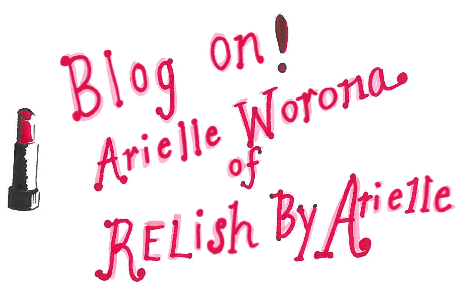

RELish by Arielle by Arielle Worona
Arielle Worona sincerely relishes the world of fashion. She is inspired by not only how people dress, but also the art behind it. Hence,** RELish by Arielle** was born. She vowed to post a fashion illustration every day and has now branched out into everything from personal style to DIYs. As her blog grows, it only gets better. Learn more about Arielle and her blogging journey through Blogspotter.
How long have you been blogging and what made you start? Ever since I can remember, I have been completely enamored by fashion. I’ve been fascinated not only by the way people express themselves through clothes, but also by the art of fashion itself. I started blogging about a year-and-a-half ago because I noticed myself becoming more and more addicted to the world of fashion blogging: I would wake progressively earlier each morning just to look at the latest posts on my favorite blogs before work. It soon became clear: I had an addiction. As a Television Executive based in Los Angeles with a very hectic schedule, I dreamed of starting a fashion blog of my own where I could display my own original fashion illustrations and outfit posts but I didn’t think I would be able to find the time. About a year-and-a-half ago, with my fashion blog addiction at its peak, I bit the bullet and started RELish By Arielle so I could challenge myself to post just one new fashion illustration a day. I’d go home after work and start painting; I felt so inspired and it was such a great way to clear my mind and press refresh. Over time, my blog began to morph into D.I.Y. posts, outfit posts and everything in between. Today, I’m so thankful that I started my blog when I did because it has given me a space where I can be 100% creative for at least a few minutes everyday. My ultimate goal is to inspire other bloggers as much as they continue to inspire me. #Slowlybutsurely.
How did you come up with a name for your blog? Growing up, my younger brother and sister always called me “Relish.” Supposedly, the idea behind this nickname came from the fact that the word “relish” has the letters ‘R,’ ‘E’ and ‘L’ at the beginning, which actually sound like “Arielle” when said together quickly. Likewise, I guess I can thank my fabulous siblings for the initial inspiration behind the name RELish By Arielle. From there, I also love that the word “relish” means to ‘savor’ or greatly ‘enjoy’ something. Every time I post something new on RELish By Arielle, it’s something I love that I also hope my readers will be inspired by.
You post mostly personal style. How would you describe yours? I would describe my personal style as classic with a touch of rocker and a dash of boho.
Where are some of your favorite places to shop and why? I love shopping at boutique stores and vintage stores because I love finding unique pieces that no one else will have. I am also a huge fan of Zara because the price-point is so affordable but the clothing is so classic with a trendy twist. One of my favorite department stores to shop at is Nordstrom because it’s a one-stop-shop with all my favorite brands in one place.
Who are some of your favorite designers and why do they inspire you? I am a huge fan of Rodarte because I love that the line is designed by sisters who have such an innovative eye for fashion. Moreover, as a fashion illustrator myself, I’ve always been mesmerized by Oscar De La Renta’s incredible gowns. His gowns are often my greatest inspiration behind my illustrations because they’re timeless and so feminine; if only we could wear gowns all day everyday. Likewise, I also can’t get enough of Chanel. I have an obsession with vintage Chanel and the fact that her pieces will forever remain in style. I also love that she was such a strong woman who wasn’t afraid to defy the odds and change people’s perspectives about how women should dress.
What is your main source of style inspiration? My main source of style inspiration comes from couture fashion illustrations and from other bloggers who are really pushing the envelope. I read tons of blogs everyday before work–including Paper Fashion, Song of Style, Gal Meets Glam, Sea of Shoes and The Blonde Salad. I am so thankful to these ladies for paving the way and continuing to keep their posts so innovative.
What spring trends are you excited to try? I can’t wait to try midi skirts in all different spring colors. I love how lady-like and classic these skirts are—especially when paired with the perfect stiletto. I also have my eye on beautiful pastel pieces right now — from baby pinks and blues to light purples and yellows.
"Starting and maintaining a blog has taught me that there are (almost) no excuses. We can all find some extra time to go after our passions." — Arielle Worona
Basics with bold accessories, or standout pieces with dainty jewelry? I am really 50/50 on this one—I love dainty jewelry because it’s so versatile. However, whenever I do wear basics, I love pairing them with bold, statement pieces that really dress up the outfit. The trick for me here is not to go too gaudy; I’m all about less is more.
What are some of your favorite colors and patterns to wear? As a native New Yorker, I have a ton of black pieces in my wardrobe but now that I live in LA, I’ve tried my very best to give my wardrobe a bright color boost. I am now gravitating towards bright pinks, blues and reds. As far as patterns go, I often lean towards simple and classic looks.
Do you take your own photos or does someone help you? I am so lucky to have partnered up with my very talented photographer friend, Alexandra Lee Nurthen who takes the pictures on my blog. We were both in the same sorority back when we were studying at Syracuse University. After graduation, we both found ourselves living in LA and we decided to put our heads together to bring RELish to life.
How do you go about choosing outfits worthy of posting? I gravitate towards outfits that are true to my style and those that I know will pop on camera—whether they’re really bright in color or they have an interesting texture. I should also mention that many bloggers often feel a need to go out and spend money on new looks so they can post about what is brand new and of the moment. Although I love buying new clothing just as much as any other girl, (if not more - I may or may not have a fashion obsession) I really try to do my best to stick to what I already own for my posts. I find this both fun and challenging, not to mention cost-effective.
About how long does an average blog post take? An average post can take me anywhere from 30 minutes to well over an hour. I am a perfectionist — I like to make sure the photos I choose are the strongest from that day’s shoot and I also pay close attention to my writing. Although many people head to fashion blogs to scroll through the pictures, I always try to make sure that my descriptions are just as engaging.
What has starting and maintaining a blog taught you? Starting and maintaining a blog has taught me that there are (almost) no excuses: we can all find some extra time to go after our passions. Likewise, our full-time jobs should not define us or hold us back from exploring other worlds that make us come alive. Thankfully, my position in the television industry continues to inspire me and pushes me to want to learn more. That said, balancing my blog with work has taught me to gain even better time-management skills. These skills are vital to running a successful blog—especially if you are not blogging full-time. I believe it’s best to post at least 5 times a week so that your readers really get to know you and they keep coming back for more.
What is the coolest thing that’s happened since you started? I think the coolest thing that has happened is that people have started to reach out from all over the world to ask me for fashion advice and to see if I they can buy my original fashion illustrations. The power of the internet is crazy! Sometimes I write posts and I can’t believe anyone outside of my family and friends are taking the time to read them. I am so humbled—especially since I have been painting and drawing fashion illustrations my entire life but until I started RELish, I never really put my work out there.
Any advice for aspiring personal style bloggers? My advice to aspiring personal style bloggers is that they shouldn’t wait until tomorrow or next year to start blogging—they should start now. I started reading fashion blogs years ago and if I had started my own blog way back then, I would have found myself as inspired as I am now years ago. I’d also suggest that new bloggers should take some time to hone in on what makes them unique. The market is growing more and more saturated with fashion bloggers so it’s important to ask yourself: how do I stand out? What makes me different? If you’re true to yourself, your blog will be organic and your readers will feel that energy. Lastly, especially when you’re just starting out, it’s important to utilize your network and the people who love you most for help. Your friends and family can most likely help you for free! Maybe your mom is an amazing photographer. Maybe your best friend in school is a social media guru. Look to those in your inner-circle for help and look to experts and those succeeding already for advice and further inspiration.
